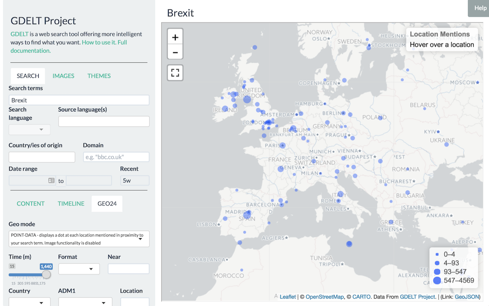
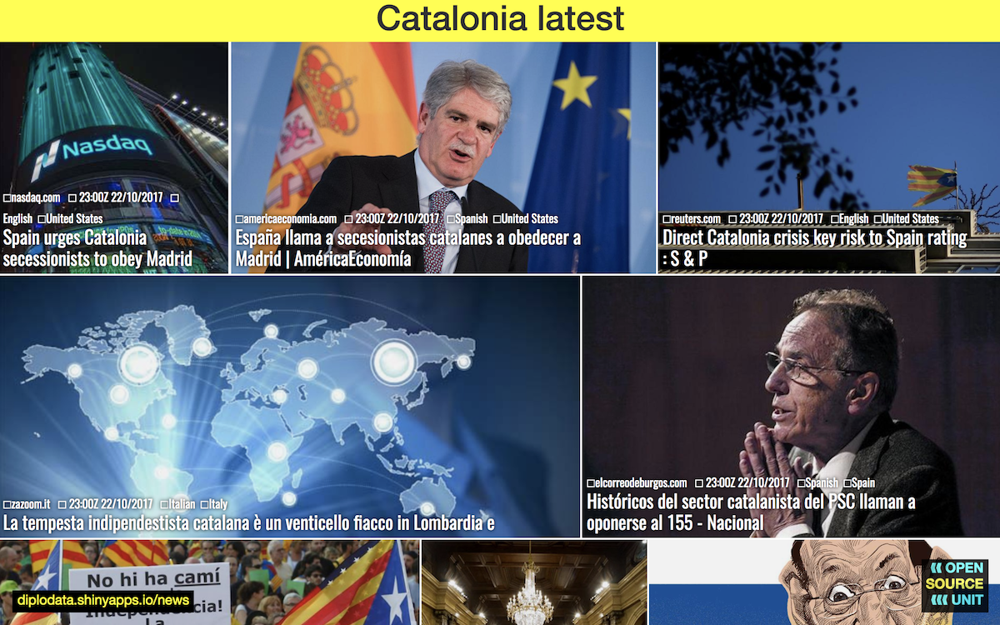
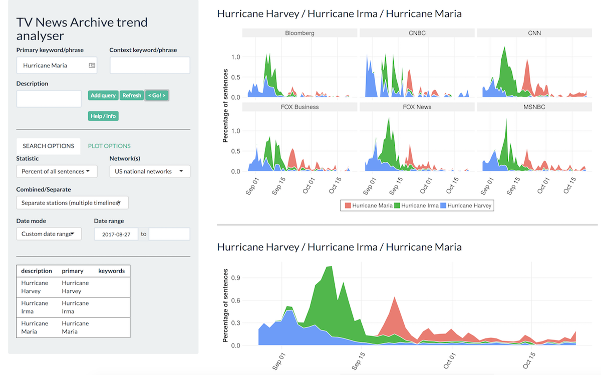
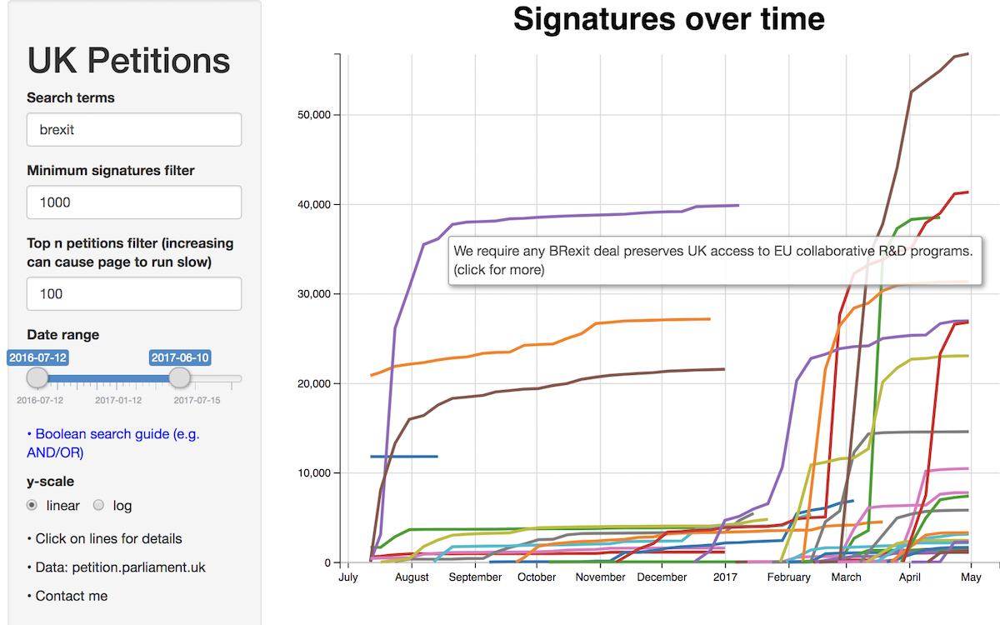
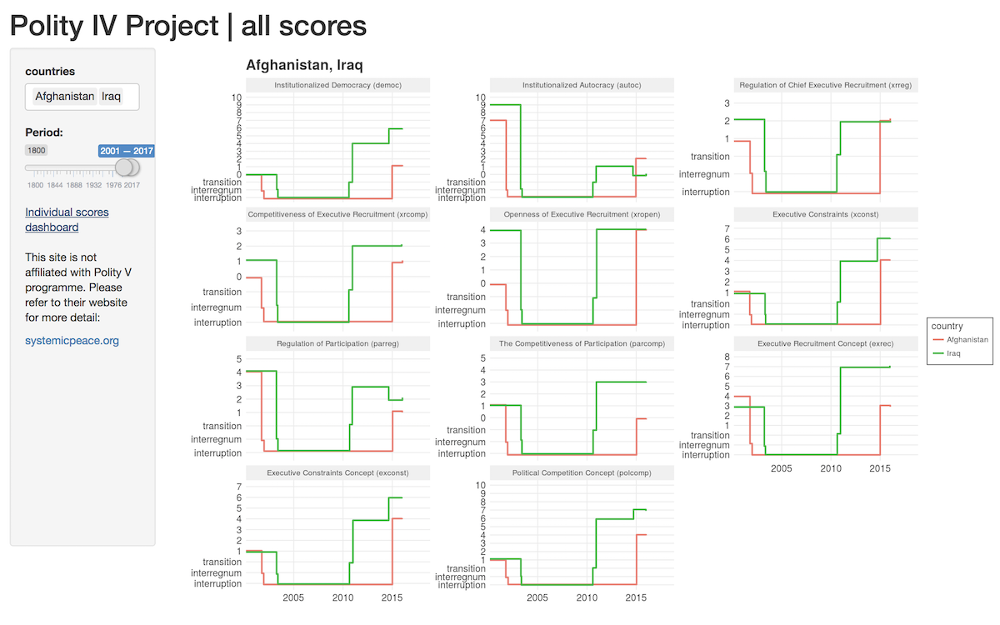
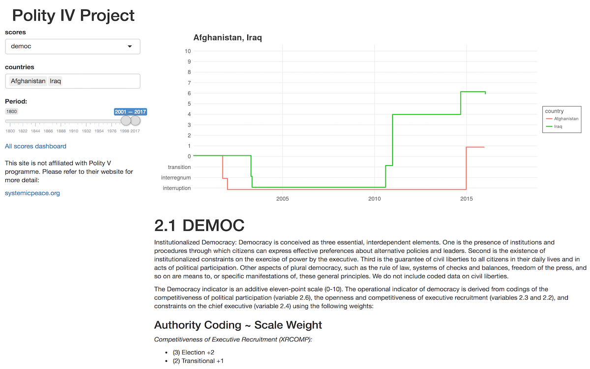
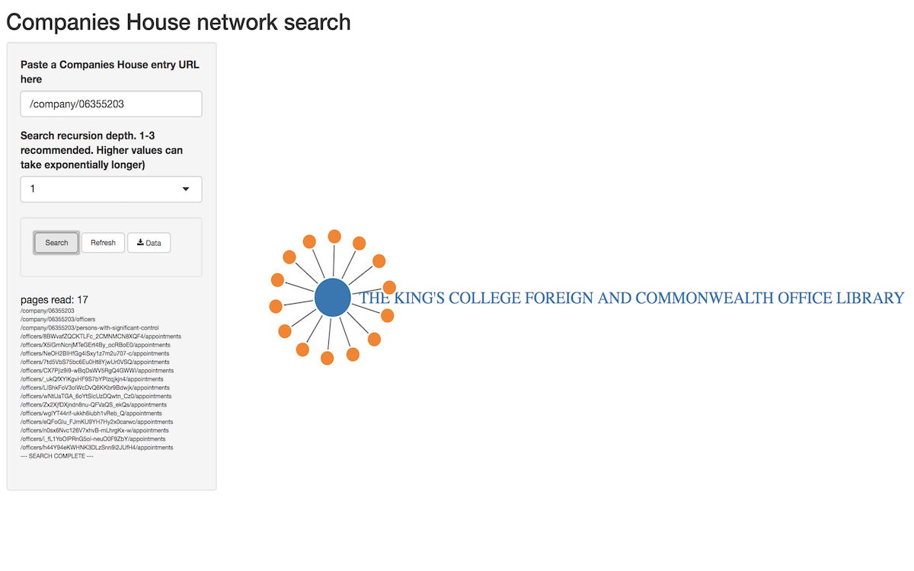

Diplodata: tools and applications
A list of tools and apps we've developed. Please check them out. Feedback to OSU appreciated.

GDELT INTERFACE
A search interface to GDELT, a global database of news and political web content. Smart search lets you search in English for non-English content.

GDELT NEWSBOARD
This tool let's you design a custom live GDELT newsboard with a dedicated URL that you can use for display purposes on a monitor or smart TV.

TELEVISION EXPLORER
Interface to a GDELT/Internet Archive collaboration to open US national network news channel closed-caption streams for trend analysis.

PETITIONS
We collect data on all UK Parliament petitions and visualise it to enable insights into trends in petitions and their signatories on any subject.

POLITY IV (comparative)
Visualisations of the Polity IV project - an academic project to develop long-term global historical national indices of democratisation vs authoitarianism.

POLITY IV (detail)
Visualisations of the Polity IV project - an academic project to develop long-term global historical national indices of democratisation vs authoitarianism.

COMPANIES HOUSE
An experimental tool to explore networks of companies and their registered owners. Still quite a slow beta, but can expose some interesting linkages.